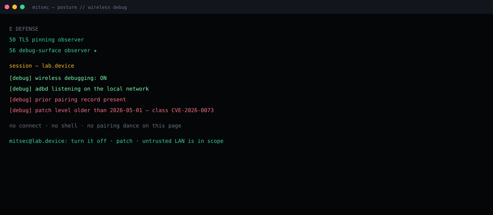

Wireless debugging left on a LAN. adbd can accept a peer as trusted when it should not.
Read posture only: toggle state, listen port class, patch level, pairing record present or not.
Public class CVE-2026-0073. Same-LAN, no tap after the feature is already on.
Patch ≥ 2026-05-01. Turn the feature off. Do not treat cafe Wi-Fi as a lab.
Summary
Wireless debugging is ADB over the local network with a pairing ceremony. The 2026 class is an authentication miss in adbd: a peer on the same LAN can be treated as already trusted. Impact class is a shell user on the device. No extra tap once the feature is enabled.
This is device posture, not com.vulnapp. AndroScope still cares — a lab build sitting on a shared SSID with wireless debugging on is a contaminated session.
Lab frame
Observer output only. Addresses and pairing material stripped.

What has to be true
- Wireless debugging is on and reachable on the LAN.
- The device has been paired at least once in its life.
- Build patch level is older than 2026-05-01.
That is the whole precondition set this page will print. How the daemon is talked to stays off-site.
Why AndroScope logs it
PREPARE maps the app. RUNTIME still inherits the device. An open wireless-debug surface means findings from that session can be blamed on the wrong layer. The observer answers three questions and stops:
[debug] wireless debugging: ON [debug] adbd on the local network [debug] prior pairing record present [debug] patch level older than 2026-05-01 no connect · no shell mitsec@lab.device:
Fix
- Ship / install a build with security patch 2026-05-01 or later.
- Leave wireless debugging off except on a lab SSID you own.
- Treat “I paired this phone last year” as a standing trust record, not a forgotten toggle.
Credit
Public write-up of the class: Mobile Hacker — Android RCE via Wireless Debugging (May 2026). This page is a posture note in the mitsec voice, not a reprint and not an exploit guide.